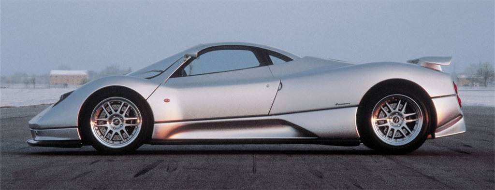
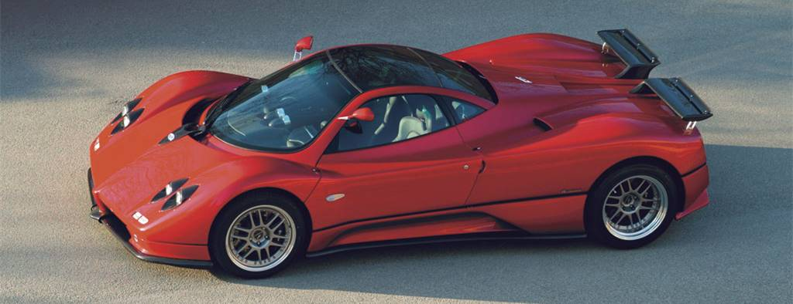
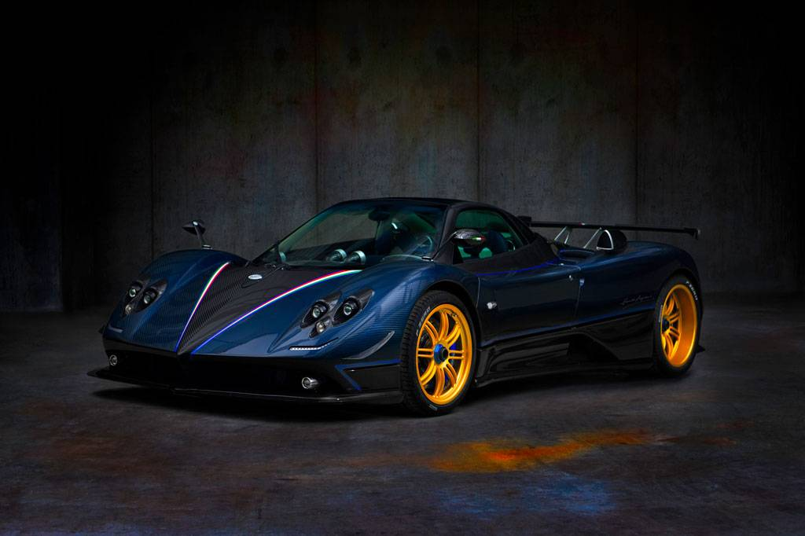

La Historia de Pagani
El motor del C12 tenía una cilindrada de 6 litros con 48 válvulas y producía 394 CV a 5.200 RPM.
Sus inicios en Argentina
Este modelo contaba con un motor V12 de Mercedes-AMG con una capacidad de 7.3 litros y bielas de titanio.
En Italia
Está equipado con un motor V12 de 6.0 litros que produce 840 caballos de fuerza y tiene un precio de aproximadamente 6,7 millones de euros.
Actualidad
El Huayra cuenta con dos carrocerías y cuatro versiones en total, el Huayra, el Huayra BC, el descapotable Huayra Roadster y el Huayra R.
Todas las versiones están construidas a partir de un cuerpo central en fibra de carbono y titanio, con subchasis delantero y trasero en acero aleado con cromo-vanadio para combinar la máxima rigidez con el mínimo peso.